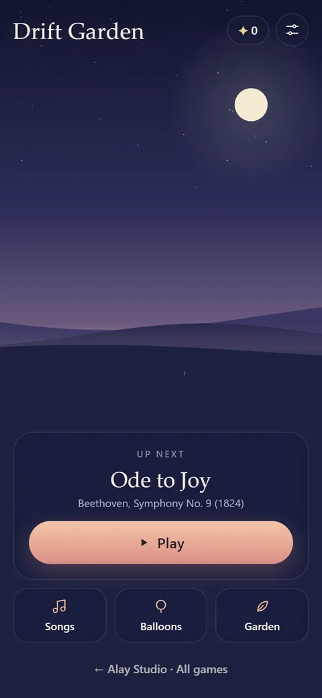
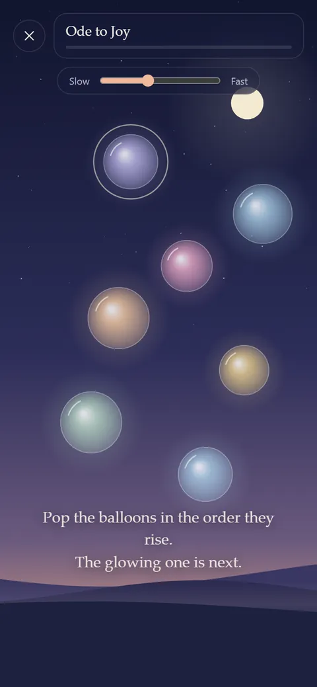
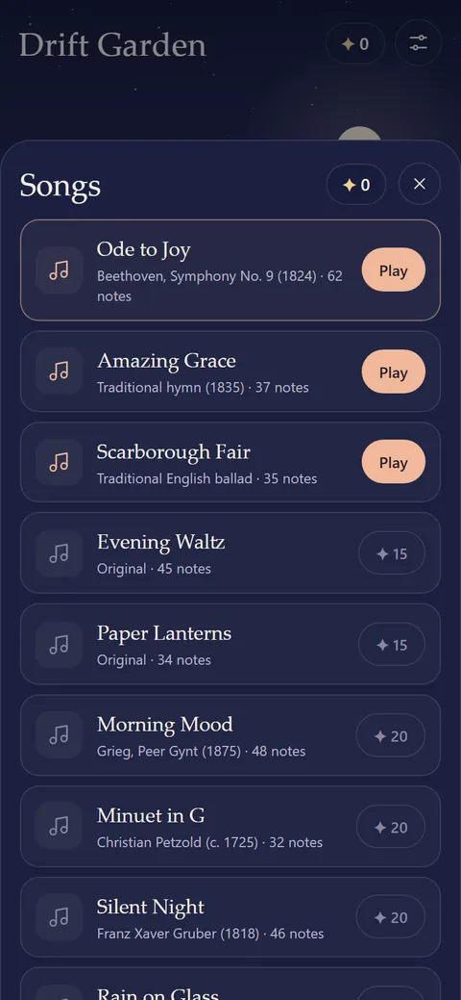

Games / Drift Garden

Calm music game
Drift Garden
Pop the drifting balloons in the order they rise and you play the melody yourself. Every song you finish adds a bloom to a quiet night garden.
Coming to the App Store. The full game is free to play in your browser now.



How to play
- Press Play: balloons rise from the bottom of the screen.
- Tap the glowing balloon. Each tap plays the next note of the song.
- Keep going in the order they rise until the melody is done.
- Use the tempo slider at the top to make the song slower or faster.
25 songs
- Public-domain classics and traditional melodies: Ode to Joy, Amazing Grace, Scarborough Fair, Morning Mood, Minuet in G, Silent Night and more.
- Two originals written for the game: Evening Waltz and Paper Lanterns.
- Finish songs to earn stars, and spend stars to unlock new songs.
Balloons that are instruments
- Each balloon type is a different instrument: piano, music box, warm pad, marimba, harp and more.
- Tap a balloon card to hear it before you choose.
Built to be calm
- No timers, no score pressure and no ads.
- Calm motion mode: slower balloons and fewer effects.
- Optional garden sounds (water, crickets, chimes) and a gentle break reminder.
Tips
- If a song feels rushed, drag the tempo slider toward Slow. There is no penalty for playing slowly.
- Follow the glow rather than the colors. The glowing balloon is always the next note.
- Try the same song with a different balloon. A melody on the harp feels very different from the music box.
- Turn on Calm motion if you play before bed or find the movement distracting.
- Decorate the garden with your stars: some pieces bring their own sounds.
Questions
Is Drift Garden in the App Store?
Not yet. You can play it now in your browser at driftgarden.alaystudio.app.
Do I need to read music?
No. You only tap the glowing balloon; the game plays the right note.
Does it have ads or collect data?
No. There are no ads, and the game keeps your progress only on your device.
Which languages does it support?
The interface is in English.